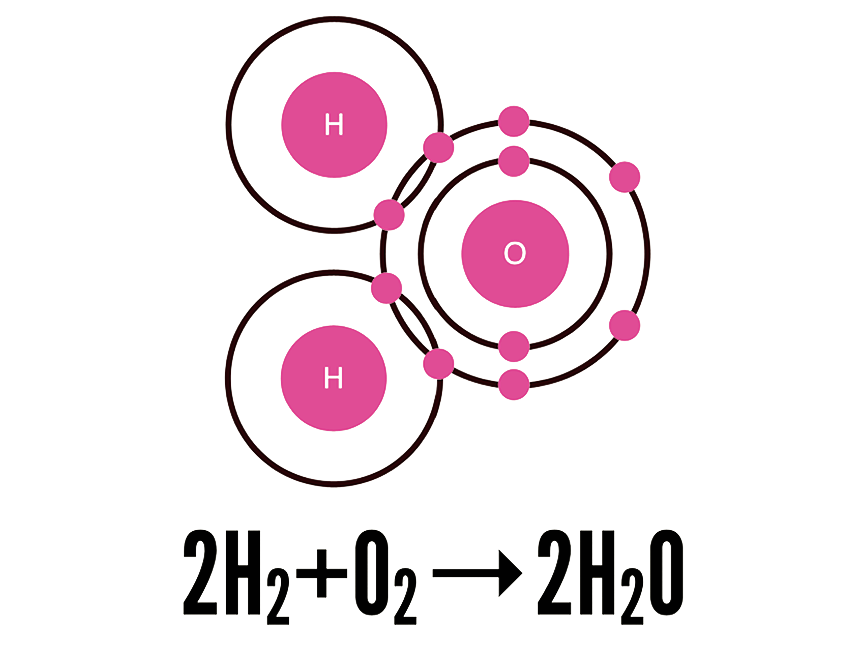

Atomic design met Pattern Lab
24-01-2017 - Bram Smulders
Modulariteit
- Uniformiteit
- Betrouwbaarheid
- Veiligheid
- Snelheid
Software ontwikkeling
- Single responsibility principe
- Open/closed principe
- Separation of concerns
We’re not designing pages, we’re designing systems of components.
- Stephen Hay
Hints uit de scheikunde

Atomen
- Meest simpele (functionele) bouwstenen van materie
- Verschillende eigenschappen
- Kunnen niet kleiner gemaakt worden zonder functionaliteit verliezen
Moleculen
- Groepen van twee of meer atomen
- Hebben meer unieke eigenschappen
- Hebben meer functie dan losse atomen
Organismen
- Samenvoegingen van moleculen die als één functioneren
- Variëren van kleine eencelligen tot complexe organismen zoals mensen
Wat zijn de bouwstenen van een interface?
Atoms
- Het fundament van de user interface
- Basis HTML-elementen als labels, input elementen, headings, buttons
- Al het andere wat niet kleiner gemaakt kan worden zonder functie te verliezen
Molecules
- Groepen van simpele UI elementen
- Functioneren samen als een eenheid
Voordelen
- Het maakt testen makkelijker
- Moedigt herbruikbaarheid aan
- Zorgt voor consistentie
Organisms
- Complexe UI componenten
- Bestaan uit groepen moleculen en/of atomen
- Vormen gescheiden “lagen” binnen de interface
You can create good experiences without knowing the content. What you can’t do is create good experiences without knowing your content structure. What is your content made from, not what your content is.
- Mark Boulton
Pages
- Het meest concrete in het design systeem
- Gebruikt “echte” representatieve content
- Dit is wat de gebruikers te zien krijgen
Variaties
- Een gebruiker heeft 1 item in zijn winkelmand, een ander 33
- Admin gebruikers hebben meer buttons op hun dashboard dan normale gebruikers
- Een headline kan 76 karakters bevatten, een ander 340
Will it blend?
- We kunnen de interface testen
- Houd de pagina zich wanneer de content er in staat?
- Ziet het er goed uit?
Nee? Terug naar de tekentafel
Maar dan alleen de moleculen/atomen waar het design wringt
Dit is atomic design
- Atoms UI-elementen die niet kleiner gemaakt kunnen worden zonder functionaliteit te verliezen
- Molecules Groepen atoms die eenvoudige UI-componenten vormen
- Organisms Complexe componenten vormen afgescheiden lagen in de interface
- Templates Paginas en hun onderliggende content structuur
- Pages Paginas met echte content en variaties om de robuustheid te testen
Wat is Pattern Lab?
- Een static site generator
- Een tool om aantekeningen en documentatie te genereren
- Een starterkit voor componenten
Beschikbare tools & documentatie
Generator Pattern Lab starterkit
- Yeoman generator voor patternlab
- Dynamische source & public folder selectie
- Gulp, Sass & ES2015+
- Colours standaard starterkit
- 3 jaar iteratieve ontwikkeling
- Versie 2.0.0 is in de maak, met oa aparte starterkits, incremental builds, meerdere pattern mappen & patternlab updates
github.com/colours/generator-patternlab-starterkit